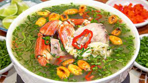
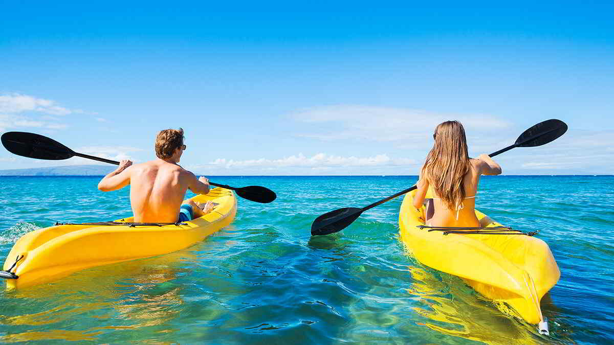

Descubre el paraíso en la costa norte de Perú
Explora la biodiversidad del Santuario Nacional Los Manglares de Tumbes, hogar de cocodrilos y aves exóticas.
Relájate en las paradisíacas playas de Punta Sal y Zorritos, ideales para disfrutar del sol y actividades acuáticas.
Disfruta de caminatas por el Parque Nacional Cerros de Amotape, hogar de flora y fauna únicas.
Uno de los platos emblemáticos de Tumbes es el ceviche de conchas negras, elaborado con mariscos frescos directamente extraídos de los manglares. Su sabor único lo convierte en una delicia para los amantes de la cocina marina.
El chilcano y el sudado de pescado son otros dos platos tradicionales tumbesinos. Preparados con pescado fresco, estos platos destacan por su sabor intenso, sazonados con ajíes y especias locales.
Explora la rica avifauna en los manglares y parques nacionales, ideal para los amantes de la naturaleza y la fotografía.
Las playas de Punta Sal y Zorritos son perfectas para practicar surf, kitesurf y otros deportes acuáticos.
Navega por los manglares en kayak y descubre la flora y fauna de una manera única y cercana.
| Tour | Duración | Incluye | Precio (Soles) |
|---|---|---|---|
| Manglares de Tumbes | 1 Día | Guía, Transporte, Almuerzo | S/ 250 |
| Punta Sal y Zorritos | 2 Días / 1 Noche | Hotel, Transporte, Desayuno | S/ 450 |
| Parque Nacional Cerros de Amotape | 1 Día | Guía, Transporte, Almuerzo | S/ 300 |
| Tour Completo Tumbes | 3 Días / 2 Noches | Hotel, Guía, Transporte, Alimentación Completa | S/ 900 |
Tumbes tiene un clima cálido y húmedo. La temperatura promedio es de 25°C, siendo más alta durante los meses de verano (diciembre a marzo). La temporada de lluvias se presenta entre enero y abril, mientras que los meses secos son de mayo a noviembre, lo que lo convierte en un destino ideal para disfrutar de sus playas y actividades al aire libre.
Tumbes es una ciudad peruana, capital del distrito, de la provincia y del departamento homónimos, situada en el extremo Noroeste del país.
"Tumbes es un lugar mágico, lleno de naturaleza y cultura. ¡Volveré!"
"Las playas son espectaculares y la comida es deliciosa. Recomiendo el ceviche de conchas negras!"
"Una experiencia única, lleno de aventura y belleza natural."